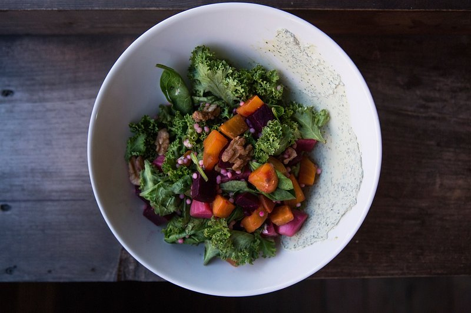

Sweet Potato and Kale Salad
Home

Description
A salad with sweet potato, kale, and caramelized onions.
Ingredients
- 2 sweet potatoes or jewel yams, cut into 1-inch cubes
- 2 tablespoons olive oil
- salt and freshly ground black pepper to taste
- 1 tablespoon olive oil
- 1 onion, sliced
- 3 cloves garlic, minced
- 1 bunch kale, torn into bite-sized pieces
- 2 tablespoons red wine vinegar
- 1 teaspoon chopped fresh thyme
Directions
- Preheat the oven to 400 degrees F (200 degrees C). Toss sweet potato cubes with 2 tablespoons of olive oil in a bowl. Season to taste with salt and pepper; arrange evenly onto a baking sheet.
- Bake in the preheated oven until the yams are tender, 20 to 25 minutes. Cool to room temperature in the refrigerator.
- Meanwhile, heat remaining 1 tablespoon of olive oil in a large skillet over medium heat. Add onion and garlic; cook and stir until onion has caramelized to a golden brown, about 15 minutes.
- Stir in kale, cooking until wilted and tender. Transfer kale mixture to a bowl; cool to room temperature in the refrigerator.
- Once all the ingredients have cooled, combine yams, kale, red wine vinegar, and fresh thyme in a bowl. Season to taste with salt and pepper, and gently stir to combine.